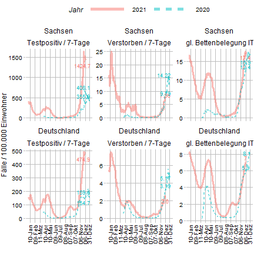
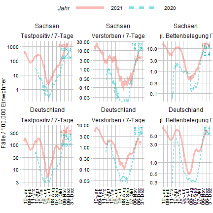

# Setup ---- library(data.table) library(ggplot2) library(ggthemes) library(magrittr) library(scales) library(lubridate) require(toolboxH) require(here) # Data ---- # get current data from github (needs linux + wget), might work with windows+RStudio? # system(paste("wget -P", paste0(getwd(), "/data"), # "https://raw.githubusercontent.com/KITmetricslab/covid19-forecast-hub-de/master/data-truth/RKI/by_age/truth_RKI-Incident%20Deaths%20by%20Age_Germany.csv")) # system(paste("wget -P", paste0(getwd(), "/data"), # "https://raw.githubusercontent.com/KITmetricslab/covid19-forecast-hub-de/master/data-truth/RKI/by_age/truth_RKI-Incident%20Cases%20by%20Age_Germany.csv")) # system(paste("wget -P", paste0(getwd(), "/data"), # "https://diviexchange.blob.core.windows.net/%24web/zeitreihe-bundeslaender.csv")) # system(paste("wget -P", paste0(getwd(), "/data"), # "https://diviexchange.blob.core.windows.net/%24web/zeitreihe-deutschland.csv")) # read data of all age groups in germany and saxony dat_age_ger <- fread(here("data/211014_population_germany.csv"), fill = TRUE, encoding = "UTF-8") dat_age_sax <- fread(here("data/211014_population_saxony.csv"), fill = TRUE, encoding = "UTF-8") # incidences dat_case <- fread("https://raw.githubusercontent.com/KITmetricslab/covid19-forecast-hub-de/master/data-truth/RKI/by_age/truth_RKI-Incident%20Cases%20by%20Age_Germany.csv", encoding = "UTF-8")#"data/truth_RKI-Incident Cases by Age_Germany.csv") # death dat_death <- fread("https://raw.githubusercontent.com/KITmetricslab/covid19-forecast-hub-de/master/data-truth/RKI/by_age/truth_RKI-Incident%20Deaths%20by%20Age_Germany.csv", encoding = "UTF-8")#"data/truth_RKI-Incident Deaths by Age_Germany.csv") # icu dat_icu_ger <- fread( "https://diviexchange.blob.core.windows.net/%24web/zeitreihe-deutschland.csv", encoding = "UTF-8") dat_icu_sax <- fread("https://diviexchange.blob.core.windows.net/%24web/zeitreihe-bundeslaender.csv", encoding = "UTF-8") dat_icu <- fread("https://diviexchange.blob.core.windows.net/%24web/bund-covid-altersstruktur-zeitreihe_ab-2021-04-29.csv", encoding = "UTF-8") # Data cleaning & merging ---- # Clean ICU data #### # I only need saxony & germany data dat_case <- dat_case[location_name %in% c("Germany", "Free State of Saxony")] dat_death <- dat_death[location_name %in% c("Germany", "Free State of Saxony")] # summarize to all ages dat_icu_ger$Behandlungsgruppe %>% table
## . ## ERWACHSENE KINDER ## 618 618
dat_icu_sax$Behandlungsgruppe %>% table
## . ## ERWACHSENE ## 9888
# clean germany data dat_icu_ger <- dat_icu_ger[Behandlungsgruppe == "ERWACHSENE", .(date = Datum, area = Bundesland, cases_its = Aktuelle_COVID_Faelle_ITS)] # clean saxony data dat_icu_sax <- dat_icu_sax[Bundesland == "SACHSEN", .(date = Datum, area = Bundesland, cases_its = Aktuelle_COVID_Faelle_ITS)] # remove time from date entry dat_icu_ger$date <- format(dat_icu_ger$date, format='%Y/%m/%d') dat_icu_sax$date <- format(dat_icu_sax$date, format='%Y/%m/%d') # reformate area entry dat_icu_ger$area <- "Germany" dat_icu_sax$area <- "Free State of Saxony" # change to per 100 000 pop_ger18 <- dat_age_ger[which(age == "18-Jährige"): .N, sum(pop_total)] dat_icu_ger[, cases100k := (cases_its / pop_ger18) * 100000] dat_icu_ger[, type := "ICU"] pop_sax18 <- dat_age_sax[which(age == "18-Jährige"): .N, sum(pop_sac)] dat_icu_sax[, cases100k := (cases_its / pop_sax18) * 100000] dat_icu_sax[, type := "ICU"] # merge data dat_icu2 <- rbindlist( list( dat_icu_ger[ , .(date, area, type, cases=cases_its,cases100k)], dat_icu_sax[ , .(date, area, type, cases=cases_its,cases100k)] ) ) # Clean Case and Death data #### # clean case data # sum values of each date and location # dat_case <- dat_case[age_group != "unbekannt"] # dat_case <- dat_case[value >= 0, ] dat_case2 <- dat_case[, .(cases = sum(value)), by = .(date, location_name)] dat_case2[, date:=as_date(date)] qlist1 = venn2(dat_case2$date %>% as.character(), (min(dat_case2$date):max(dat_case2$date)) %>%as_date() %>% as.character())
qlist1$q3
## [1] "2021-10-26"
dat_case3 = rbind(dat_case2, data.table(date = as_date("2021-10-26"), location_name = c('Germany', 'Free State of Saxony'), cases = c(10473, 494))) dat_case3[, type := "Case"] # calculate per 100 000 incidence pop_ger <- dat_age_ger[, sum(pop_total)] pop_sax <- dat_age_sax[, sum(pop_sac)] dat_case3[, pop := ifelse(location_name=="Germany", pop_ger, pop_sax)] dat_case3[, cases100k := (cases / pop) * 100000 ] # clean death data # dat_death <- dat_death[age_group != "unbekannt"] # dat_death <- dat_death[value >= 0, ] dat_death2 <- dat_death[, .(cases = sum(value)), by = .(date, location_name)] qlist2 = venn2(dat_death2$date %>% as.character(), (min(dat_death2$date):max(dat_death2$date)) %>%as_date() %>% as.character())

qlist2$q3
## [1] "2021-10-26"
dat_death2[, date:=as_date(date)] dat_death3 = rbind(dat_death2, data.table(date = as_date("2021-10-26"), location_name = c('Germany', 'Free State of Saxony'), cases = c(95245-95117, 10286-10284))) dat_death3[, type := "Death"] # calculate per 100 000 incidence dat_death3[, pop := ifelse(location_name=="Germany", pop_ger, pop_sax)] dat_death3[, cases100k := (cases / pop) * 100000 ] # merge data dat_case_death <- rbindlist( list( dat_case3[ , .(date, area = location_name, type,cases, cases100k)], dat_death3[ , .(date, area = location_name, type, cases,cases100k)] ) ) # format date dat_case_death$date <- format(as.POSIXct(dat_case_death$date), format = "%Y-%m-%d") dat_icu2$date <- format(as.POSIXct(dat_icu2$date), format = "%Y-%m-%d") # Joint data ---- # bind all data dat <- rbindlist( list( dat_icu2, dat_case_death ) ) # get rolling mean # for each age group setorder(dat, area, type, date) dat[, cases100k7d := frollsum( n = 7, x = cases100k, align = "right", na.rm = T), .(area, type)] dat[,cases2plot := ifelse(type=="ICU", cases100k, cases100k7d)] # create date comparison groups dat$date <- as.Date(dat$date, format="%Y-%m-%d") dat[, year := year(date) %>% as.numeric()] maxdate = max(dat[year ==2021, date]) maxdate
## [1] "2021-11-27"
# add a year to enable plotting using date scale, otherwise: chaos, madness, death... dat[year == "2020", date := date + years(1)] # dat$date <- format(dat$date, format="%m-%d") # remove data not in time window dat <- dat[!is.na(year)] dat[,year:=factor(year,levels = c(2021, 2020))] dat %>% str
## Classes 'data.table' and 'data.frame': 3688 obs. of 8 variables: ## $ date : Date, format: "2021-03-25" "2021-03-26" ... ## $ area : chr "Free State of Saxony" "Free State of Saxony" "Free State of Saxony" "Free State of Saxony" ... ## $ type : chr "Case" "Case" "Case" "Case" ... ## $ cases : num 148 0 346 127 185 178 87 152 149 153 ... ## $ cases100k : num 3.65 0 8.53 3.13 4.56 ... ## $ cases100k7d: num NA NA NA NA NA ... ## $ cases2plot : num NA NA NA NA NA ... ## $ year : Factor w/ 2 levels "2021","2020": 2 2 2 2 2 2 2 2 2 2 ... ## - attr(*, ".internal.selfref")=<externalptr>
# Plotting ---- brk_vec = c(seq(max(dat$date),maxdate +30, -30), seq(maxdate, min(dat$date), -30)) plotdates = dat[,.(maxdat =max(date) %>% unique()), .(year,type)]$maxdat %>% unique() plotdates
## [1] "2021-12-31" "2021-11-27"
setorder(dat, -date, year, area,type) dat
## date area type cases cases100k cases100k7d cases2plot year ## 1: 2021-12-31 Free State of Saxony Case 3571 88.0219850 408.115376 408.115376 2020 ## 2: 2021-12-31 Free State of Saxony Death 136 3.3522795 14.222539 14.222539 2020 ## 3: 2021-12-31 Free State of Saxony ICU 575 16.8588922 117.719048 16.858892 2020 ## 4: 2021-12-31 Germany Case 32552 39.1461582 159.487644 159.487644 2020 ## 5: 2021-12-31 Germany Death 964 1.1592804 5.172267 5.172267 2020 ## --- ## 3684: 2021-01-01 Free State of Saxony Death 127 3.1304374 14.986661 14.986661 2021 ## 3685: 2021-01-01 Free State of Saxony ICU 564 16.5363743 117.719048 16.536374 2021 ## 3686: 2021-01-01 Germany Case 22924 27.5677848 156.350131 156.350131 2021 ## 3687: 2021-01-01 Germany Death 553 0.6650229 5.341830 5.341830 2021 ## 3688: 2021-01-01 Germany ICU 5583 8.0433836 56.359872 8.043384 2021
maxi_pre = dat[duplicated(paste(area, type, year))==F] maxi2add = dat[year == 2020 & paste(date, area, type) %in% maxi_pre[year == 2021, paste(date, area, type)],] maxi = rbind(maxi_pre, maxi2add) # maxi = dat[date %in% plotdates] maxi[,cases2plotround := ifelse(type=="Death", round(cases2plot,2) %>% as.character(),round(cases2plot,1)%>% as.character())] setorder(maxi, -date) # maxi[allDuplicatedEntries(paste(area, type, year))] # maxi = maxi[duplicated(paste(area, type, year))==F] maxi
## date area type cases cases100k cases100k7d cases2plot year ## 1: 2021-12-31 Free State of Saxony Case 3571 88.0219850 408.115376 408.115376 2020 ## 2: 2021-12-31 Free State of Saxony Death 136 3.3522795 14.222539 14.222539 2020 ## 3: 2021-12-31 Free State of Saxony ICU 575 16.8588922 117.719048 16.858892 2020 ## 4: 2021-12-31 Germany Case 32552 39.1461582 159.487644 159.487644 2020 ## 5: 2021-12-31 Germany Death 964 1.1592804 5.172267 5.172267 2020 ## 6: 2021-12-31 Germany ICU 5622 8.0995706 56.044361 8.099571 2020 ## 7: 2021-11-27 Free State of Saxony Case 10592 261.0834124 1541.925308 1541.925308 2021 ## 8: 2021-11-27 Free State of Saxony Death 48 1.1831575 6.211577 6.211577 2021 ## 9: 2021-11-27 Free State of Saxony ICU 556 16.3018158 105.052889 16.301816 2021 ## 10: 2021-11-27 Germany Case 67125 80.7227166 487.138295 487.138295 2021 ## 11: 2021-11-27 Germany Death 303 0.3643796 2.155011 2.155011 2021 ## 12: 2021-11-27 Germany ICU 4338 6.2497220 40.827772 6.249722 2021 ## 13: 2021-11-27 Free State of Saxony Case 2165 53.3653312 247.822189 247.822189 2020 ## 14: 2021-11-27 Free State of Saxony Death 80 1.9719291 4.880525 4.880525 2020 ## 15: 2021-11-27 Free State of Saxony ICU 347 10.1739750 67.376929 10.173975 2020 ## 16: 2021-11-27 Germany Case 22806 27.4258812 152.522341 152.522341 2020 ## 17: 2021-11-27 Germany Death 426 0.5122961 2.352233 2.352233 2020 ## 18: 2021-11-27 Germany ICU 3846 5.5409016 37.790793 5.540902 2020 ## cases2plotround ## 1: 408.1 ## 2: 14.22 ## 3: 16.9 ## 4: 159.5 ## 5: 5.17 ## 6: 8.1 ## 7: 1541.9 ## 8: 6.21 ## 9: 16.3 ## 10: 487.1 ## 11: 2.16 ## 12: 6.2 ## 13: 247.8 ## 14: 4.88 ## 15: 10.2 ## 16: 152.5 ## 17: 2.35 ## 18: 5.5
p1 <- ggplot( dat, aes( x = date, y = cases2plot, col = year, lty = year, lwd = year ) ) + facet_wrap( area~type, scales = "free_y", labeller = labeller( area = c( "Germany" = "Deutschland", "Free State of Saxony" = "Sachsen" ), type = c("Case" = "Testpositiv / 7-Tage", "Death" = "Verstorben / 7-Tage", "ICU" = "tägl. Bettenbelegung ITS") ) ) + geom_line(alpha=0.5) + scale_x_date(breaks = brk_vec, date_labels = "%d-%b") + ylab("Fälle / 100.000 Einwohner") + xlab("") + theme_pander() + theme(axis.text.x = element_text(angle = 90, vjust = 0.4), panel.grid.major = element_line(linetype = "solid"), panel.grid.minor = element_blank(), legend.position = "top", legend.justification = "center" ) + labs(color = "Jahr", lty = "Jahr") + scale_size_manual(values = c(1.2, 0.9)) + ggrepel::geom_text_repel(data = maxi, aes(label = cases2plotround ), size=3, alpha = 1, show.legend=FALSE, min.segment.length = 0, direction = "y")+ # ggrepel::geom_text_repel(data = maxi, aes(label = cases2plotround ), size=3, alpha = 0.9, show.legend=FALSE, min.segment.length = 0, col = "black")+ guides(lwd = "none",col = guide_legend(nrow = 1,override.aes=list(size=2),keywidth = 5)) p1
## Warning: Removed 6 row(s) containing missing values (geom_path).

jpeg(here("results/b19_S14_2_year2year_comparison.jpeg"), 10,4,units = "in", quality = 100, res = 150) p1
## Warning: Removed 6 row(s) containing missing values (geom_path).
dev.off()
## png ## 2
p2 = p1+scale_y_log10(breaks = log_breaks(6)) p2
## Warning in self$trans$transform(x): NaNs produced
## Warning: Transformation introduced infinite values in continuous y-axis
## Warning: Removed 6 row(s) containing missing values (geom_path).

jpeg(here("results/b19_S14_2_year2year_comparison_log.jpeg"), 10,4,units = "in", quality = 100, res = 150) p2
## Warning in self$trans$transform(x): NaNs produced
## Warning: Transformation introduced infinite values in continuous y-axis
## Warning: Removed 6 row(s) containing missing values (geom_path).
dev.off()
## png ## 2
finalizeSkript()
## < table of extent 0 >
## R version 4.1.1 (2021-08-10) ## Platform: x86_64-w64-mingw32/x64 (64-bit) ## Running under: Windows 10 x64 (build 19043) ## ## Matrix products: default ## ## locale: ## [1] LC_COLLATE=German_Germany.1252 LC_CTYPE=German_Germany.1252 ## [3] LC_MONETARY=German_Germany.1252 LC_NUMERIC=C ## [5] LC_TIME=German_Germany.1252 ## ## attached base packages: ## [1] stats graphics grDevices utils datasets methods base ## ## other attached packages: ## [1] toolboxH_0.2.16 eulerr_6.1.1 testthat_3.1.0 stringr_1.4.0 ## [5] readxl_1.3.1 RColorBrewer_1.1-2 png_0.1-7 fdrtool_1.2.16 ## [9] R.utils_2.11.0 R.oo_1.24.0 R.methodsS3_1.8.1 lubridate_1.8.0 ## [13] here_1.0.1 scales_1.1.1 magrittr_2.0.1 ggthemes_4.2.4 ## [17] ggplot2_3.3.5 data.table_1.14.2 ## ## loaded via a namespace (and not attached): ## [1] httr_1.4.2 tidyr_1.1.4 jsonlite_1.7.2 sp_1.4-5 ## [5] highr_0.9 pander_0.6.4 cellranger_1.1.0 ggrepel_0.9.1 ## [9] pillar_1.6.3 lattice_0.20-44 glue_1.4.2 digest_0.6.28 ## [13] colorspace_2.0-2 plyr_1.8.6 WriteXLS_6.3.0 pkgconfig_2.0.3 ## [17] ggspatial_1.1.5 purrr_0.3.4 jpeg_0.1-9 ggmap_3.0.0 ## [21] tibble_3.1.5 proxy_0.4-26 generics_0.1.0 farver_2.1.0 ## [25] ellipsis_0.3.2 withr_2.4.2 crayon_1.4.1 maptools_1.1-2 ## [29] evaluate_0.14 fansi_0.5.0 foreign_0.8-81 GADMTools_3.9-1 ## [33] class_7.3-19 rosm_0.2.5 tools_4.1.1 RgoogleMaps_1.4.5.3 ## [37] lifecycle_1.0.1 munsell_0.5.0 compiler_4.1.1 e1071_1.7-9 ## [41] rlang_0.4.11 classInt_0.4-3 units_0.7-2 grid_4.1.1 ## [45] rjson_0.2.20 labeling_0.4.2 bitops_1.0-7 gtable_0.3.0 ## [49] DBI_1.1.1 curl_4.3.2 R6_2.5.1 gridExtra_2.3 ## [53] knitr_1.36 dplyr_1.0.7 rgdal_1.5-27 rgeos_0.5-8 ## [57] utf8_1.2.2 rprojroot_2.0.2 KernSmooth_2.23-20 stringi_1.7.5 ## [61] Rcpp_1.0.7 vctrs_0.3.8 sf_1.0-3 tidyselect_1.1.1 ## [65] xfun_0.26